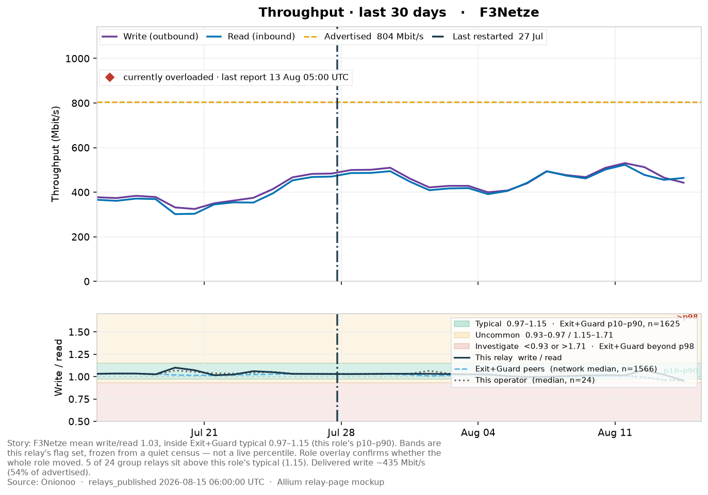
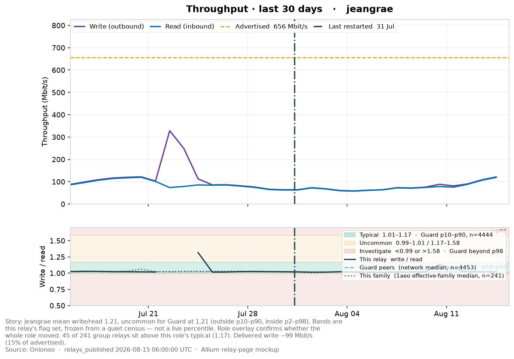
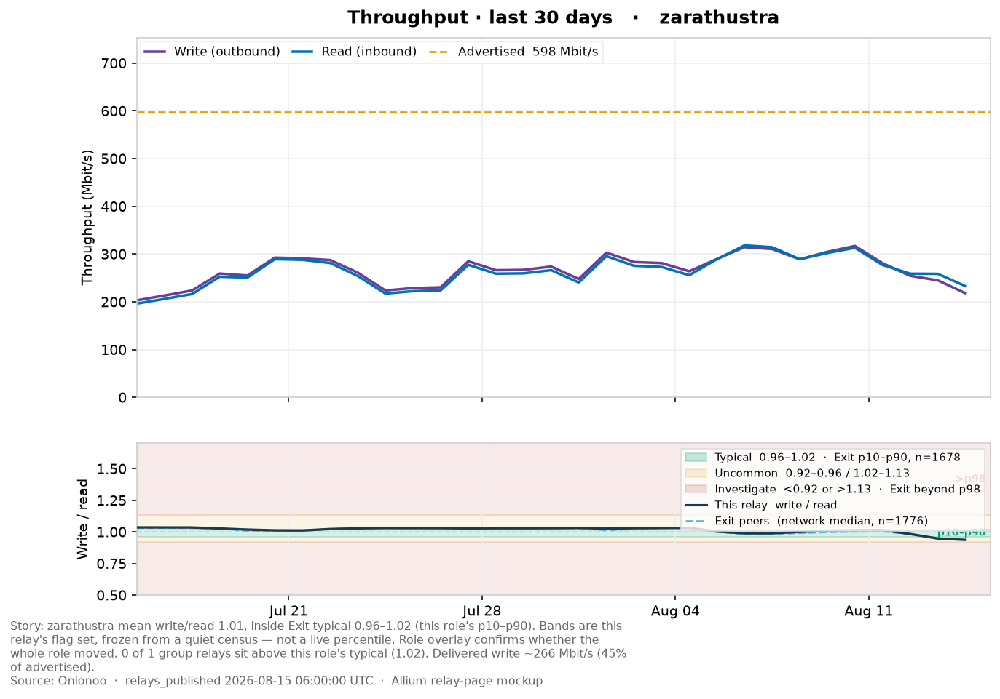
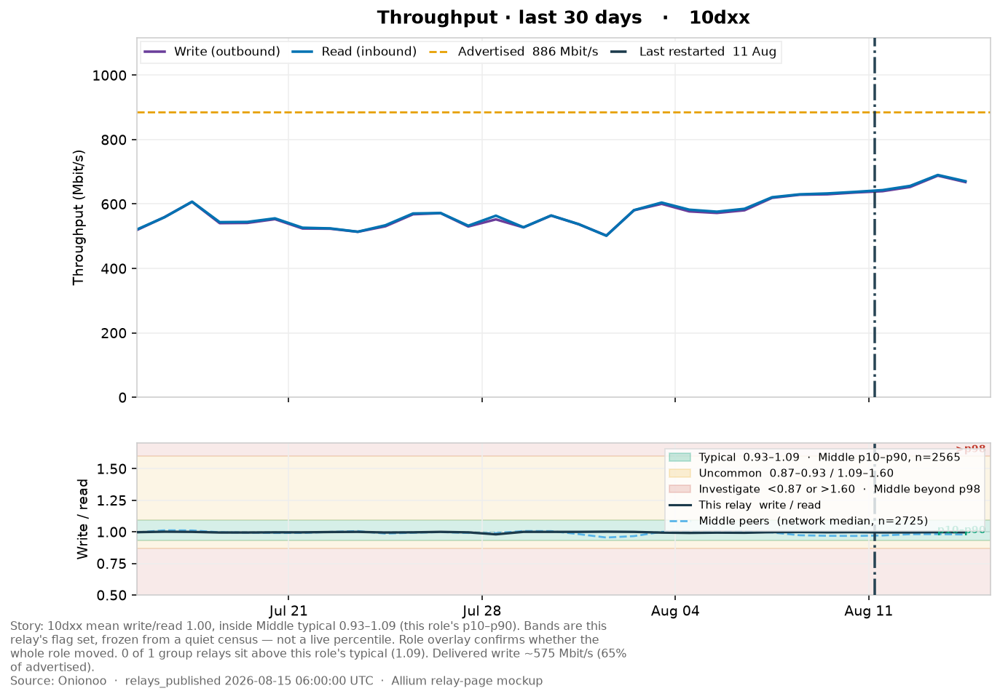

Option C — one chart per frozen flag-set band
Same History subsection as the F3Netze page. Each relay uses its own
Exit / Guard / Exit+Guard / Middle p10–p90 and p98. Overlay is already
on the strip.
Exit+Guard · F3Netze
3C89C80E2699FB6358BBB64FDC9547AFCB5C03F7 · Exit, Fast, Guard, Running, Stable, V2Dir, Valid · AS205100 ·
Germany · family 24
Frozen bands: typical 0.97–1.15
(p10–p90) · investigate <0.93 or
>1.71 (beyond p98)

Exit+Guard frozen p10–p90 / beyond p98. inside Exit+Guard typical 0.97–1.15 (this role's p10–p90).
Guard · jeangrae
02B1C5DFBCBEC735435652050DE1AF0BB0B108CF · Fast, Guard, HSDir, Running, Stable, V2Dir, Valid · AS36849 ·
United States · family 241
Frozen bands: typical 1.01–1.17
(p10–p90) · investigate <0.99 or
>1.58 (beyond p98)

Guard frozen p10–p90 / beyond p98. uncommon for Guard at 1.20 (outside p10–p90, inside p2–p98).
Exit · zarathustra
E70906B974DF23A6858B06FED589DC3696781F00 · Exit, Fast, Running, Stable, Valid · AS680 ·
Germany · family 1
Frozen bands: typical 0.96–1.02
(p10–p90) · investigate <0.92 or
>1.13 (beyond p98)

Exit frozen p10–p90 / beyond p98. inside Exit typical 0.96–1.02 (this role's p10–p90).
Middle · 10dxx
F538DBEA80CA7DA733537166CA364D98CBE9E1D1 · BadExit, Fast, MiddleOnly, Running, Stable, Valid · AS49981 ·
Netherlands · family 1
Frozen bands: typical 0.93–1.09
(p10–p90) · investigate <0.87 or
>1.60 (beyond p98)

Middle frozen p10–p90 / beyond p98. inside Middle typical 0.93–1.09 (this role's p10–p90).
Onionoo relays_published 2026-08-15 06:00:00 UTC.
Bands frozen from the 2026-08-15 19:00 census. Not a live percentile.